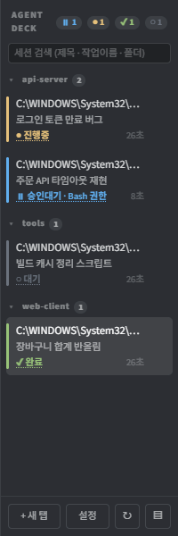
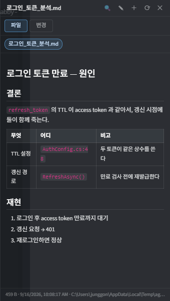
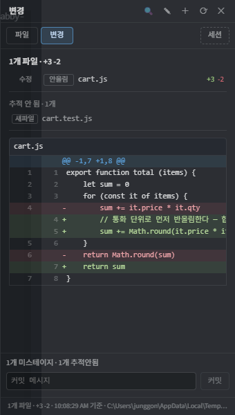

Claude Code · Codex · Gemini CLI 를 여러 탭에 띄워 놓고 쓰는 사람을 위한 Tabby 플러그인.
순정 탭바를 세션 데크로 바꾼다. 어느 에이전트가 돌고 있고, 어느 쪽이 내 승인에 막혀 있고, 어느 쪽이 사용량 한도에 걸렸는지 — 탭을 옮겨 다니지 않고 한눈에 본다. 만든 결과물은 터미널 옆 패널에서 그대로 보고, 에이전트 CLI 가 터미널에서 겪는 문제들 (이미지 붙여넣기, 줄바꿈 키, pty 폭 어긋남, 2중 붙여넣기)도 같이 손봐 뒀다.
Tabby → 설정 → 플러그인 → 검색 agentdeck



변경 탭: 작업트리의 diff, 스테이지, 두 번 눌러 커밋.
아래는 전부 훅을 설치하지 않아도 동작한다 — 상태를 화면에 찍힌 문구로 판정하므로 Claude Code 뿐 아니라 Codex · Gemini 도 함께 잡힌다.
진행중 · 승인대기 · 한도 도달 · 완료 · 오류 · 대기 를 경과 시간과 함께. 승인대기면 무엇을 승인해야 하는지, 한도면 언제 풀리는지까지 줄에 붙는다.
마크다운 · 이미지 · CSV · 코드를 터미널 옆 패널에서 본다. 화면에 찍힌 경로를 스스로 주우므로 열라고 시킬 필요가 없다. 그 자리에서 고쳐 저장까지 된다.
작업트리의 git diff 를 파일별 증감과 함께. 스테이지하고, 두 번 눌러 커밋한다.
diff 줄을 누르면 파일:라인 이 터미널에 입력된다.
닫힌 Claude Code 세션이 UUID 가 아니라 내가 실제로 친 프롬프트로 보인다.
누르면 그 세션의 작업 폴더에서 claude --resume 으로 되살아난다.
Ctrl+V 이미지 붙여넣기, Shift+Enter 줄바꿈, 2중 붙여넣기 없는 우클릭 복사/붙여넣기, 그리고 조합 중인 한글 음절이 새 줄로 내려가지 않는 IME 보정.
Ctrl+1…9로 고정 번호의 탭에 바로 이동한다. 필터나 다른 탭 종료에도 번호는 유지되고, 빈 번호는 새 탭이 재사용한다. 통신을 연결하면 “3번 탭에 조사 결과 전달해”처럼 에이전트끼리 메시지와 답장을 주고받을 수 있다. 전송할 때는 현재 번호에 해당하는 실제 세션 ID를 확인한다. 메시지 전송만으로 상대가 자동 실행되지는 않으며, 수신 확인이나 답장으로 읽었는지 확인한다. 통신 연결 방법
Tabby 안에서: 설정 → 플러그인 → agentdeck 검색 → 설치 → Tabby 재시작.
소스에서:
npm install
npm run build
powershell -NoProfile -ExecutionPolicy Bypass -File install.ps1상태 통보 훅이 PowerShell 스크립트라 그 부분은 Windows 전용이다. 나머지는 플랫폼을 가리지 않지만 다른 OS 에서 돌려 본 적은 없다 — macOS · Linux 에서 Tabby 를 쓴다면 무엇이 깨졌는지 적어 주는 이슈가 실제로 도움이 된다.
설정 → AgentDeck → 문제 신고 → 모으기 를 누르면 진단 묶음(zip)이 만들어진다
(버전 · 환경 · 설정 · 예외 기록). 터미널에 찍힌 내용은 켜지 않는 한 빠진다.
그 zip 을 이슈에 붙이면 대개 되묻지 않고 원인을 찾을 수 있다.